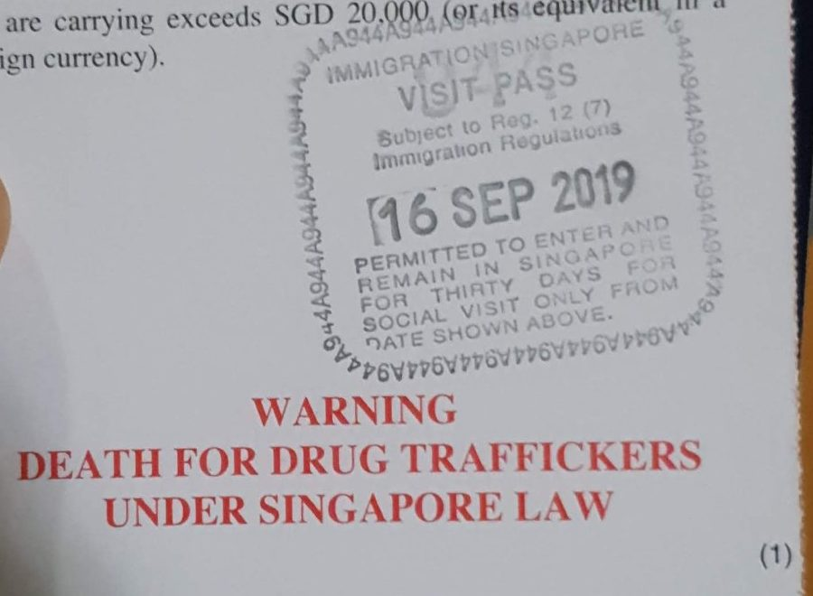
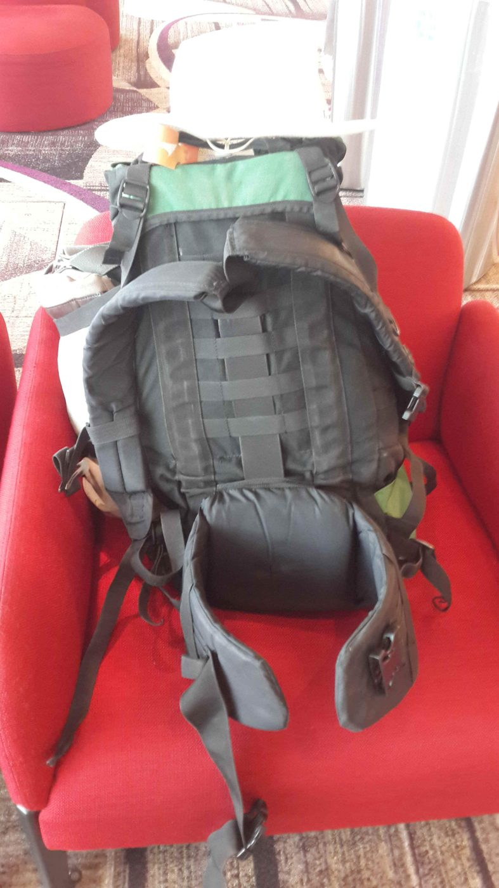
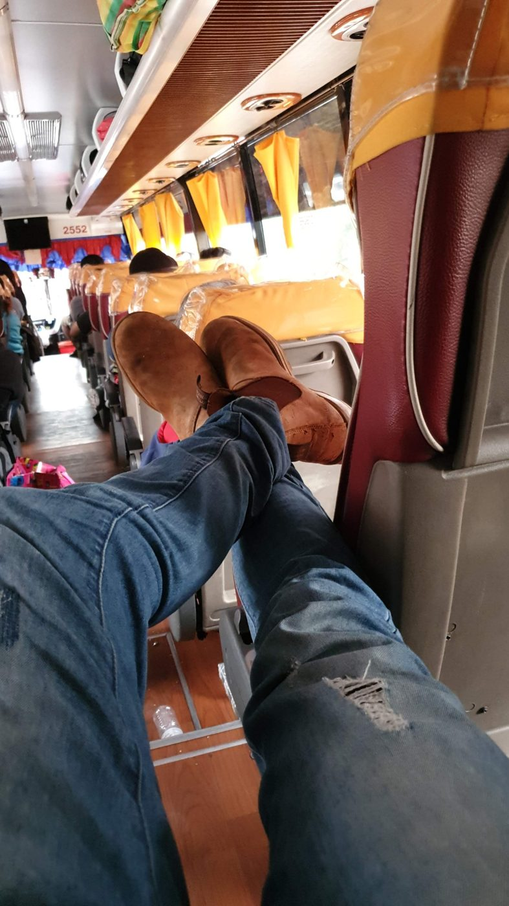
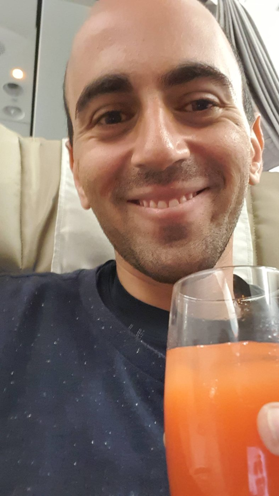
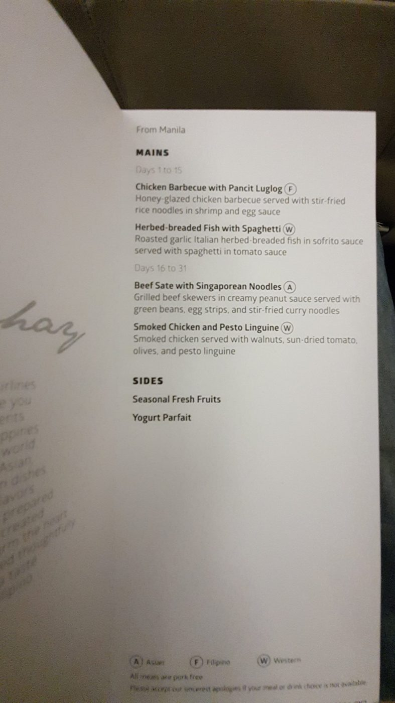
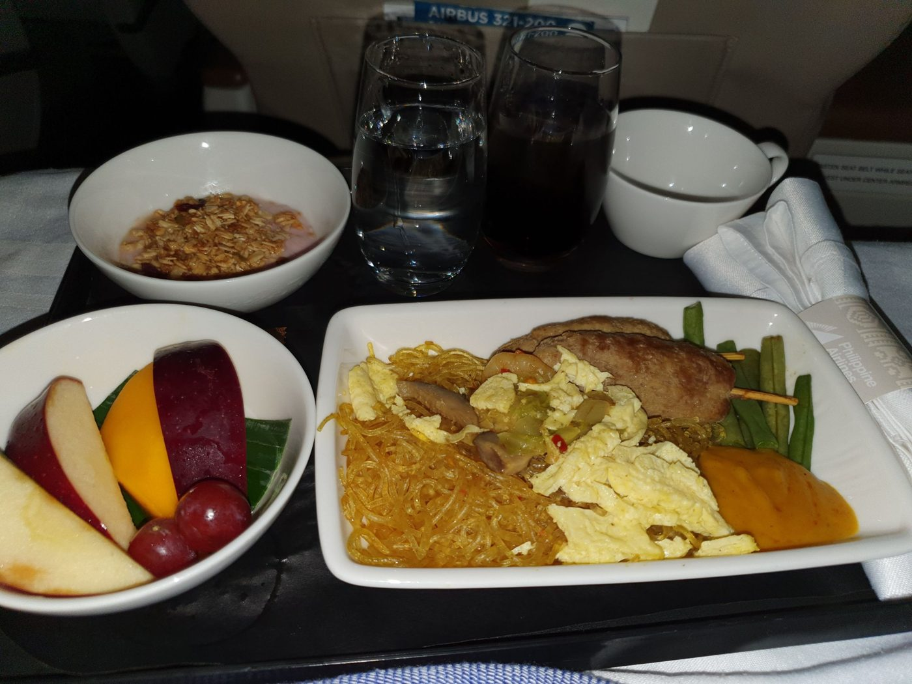

Southeast Asia · Philippines · Angeles City and Banaue
Singapore, Angeles City and Banaue, September 2019
I arrived in the Philippines on September 16, 2019, after Thailand, and I spent my first five days on Luzon: a night stop in Singapore, a few days in Angeles City and a trip north to Banaue. This page is built from my photos, my phone's clock and what I remember, and I say plainly where I do not remember.
In short: five days, three places and a tropical depression. I do not show my nights out in Angeles City, because there is nothing in them that helps another traveler. The boxes hold what I looked up in November 2026, marked as current.
- Clark airport to Angeles City: about 20 minutes. Grab lists about 250 to 350 pesos, and a metered taxi is quoted at about 300 to 500 pesos.
- Manila to Banaue by bus: about 9 hours on paper and 10 to 12 hours with delays, and one operator's fare is listed at 958 pesos from Cubao.
- When to go: the rainy months, July to September, carry the risk of landslides around Banaue. November to April is the dry season.
- My own 2019 prices: I do not remember any, so I give none.
The sources are in the box at the end. These things change, so check before you go.
September 16: Singapore and the flight to Clark
I flew from Phuket to Singapore. I do not remember the airline. I had a connecting flight to the Philippines, and I did not wait long. My passport has a Singapore visit pass stamped September 16, 2019, valid for thirty days. On the slip stapled next to it, in red, is a warning I remember well: "Death for drug traffickers under Singapore law." I show only the stamp and the warning.

My first photo of the day is from 16:32: my backpack, with a hat on top, on a red armchair in a waiting area. I did not confirm which airport it is, so I do not name one.

I landed at what I think was Clark airport, and I took a taxi in the style of a van to Angeles City. I do not remember the price. I slept in a very nice hotel, and I am trying to remember its name. At 23:34 I photographed a SIM card pack, in GMT+08:00, which I do not show because of the numbers on it.
September 17 and 18: Angeles City
I went out on my first night in Angeles City, and I filmed and took photos until about 04:14, and I do not show any of it. I have very little else from these two days.
On September 18, at about 20:12, I photographed a draft message on my phone with a list of places: Boracay, Palawan (Puerto Princesa), El Nido, Baguio, Vigan and Sagada. I do not remember who gave me the list or whether I wrote it as a plan, so I give it only as a list. I did go to Palawan right after this stretch.
The same day I also have a screenshot of my travel insurance policy, which I do not show because it has personal details, and a photo of a baggage lost-and-found contact page of a Singapore airport services company, from 18:44. I do not remember why I photographed it.
September 19: the bus to Banaue
On September 19 I took a bus north to Banaue, in the mountains of Ifugao province, where the famous rice terraces are. I do not remember the bus company or the price, or where in Angeles it left. I booked a hostel through the RedDoorz app, and I do not remember its name.
At 17:17 my phone showed an extreme general flood warning for Banaue, valid until 17:29, from the national weather service. It said that Tropical Depression "Nimfa" was about 785 km east northeast of Basco, Batanes, with sustained winds of 55 km/h, and that the southwest monsoon was affecting central and southern Luzon. The rain did not stop. News reports from the same days confirm both the storm and the monsoon rain over Luzon, and I give them below.
September 20: leaving the rain
I left Banaue the next day, September 20, because the rain did not stop. I took a bus from Banaue to Manila. In my photo of it, my feet are crossed on the seat in front of me, and the other passengers are far away.

From Manila I flew to Palawan with Philippine Airlines, on an Airbus A321-200. I sat in business class by mistake, without noticing. The menu in the seat pocket is headed "From Manila," and its second page for the days 16 to 31 of the month lists beef satay with Singaporean noodles. At 21:24 I photographed my tray, which has a skewer, noodles, green beans, fruit and yogurt, so I think that is what I ate.



- The Singapore warning: drug trafficking is punishable by death under Singapore's Misuse of Drugs Act, and the government says every capital case gets full due process (Singapore MHA). It is not a summary punishment at the airport.
- Singapore entry today: the US State Department says travelers must submit the SG Arrival Card up to three days before they arrive, with some exceptions for people who only transit (travel.state.gov). Check what applies to your own connection.
- Clark to Angeles: Grab says about 20 minutes and about 250 to 350 pesos (Grab). Another guide gives 300 to 500 pesos for a metered taxi (Uncharted Lens).
- Manila to Banaue: an estimate of about 9 hours by bus, and 10 to 12 with delays (12Go). One 2026 listing gives 958 pesos for Ohayami Trans from Cubao, and warns that fuel surcharges can raise it (Pamasahe). A review site says the bus from Banaue leaves in the evening and arrives in Manila early the next morning (12Go).
- Season and storms: a guide says to avoid July to September because of landslides (Goway). Al Jazeera reports that Super Typhoon Fung-wong set off a landslide in Batad in November 2025 that killed two people (Al Jazeera), so check the forecast even in the drier months.
- The storm I saw: Rappler reports that Nimfa became a tropical depression on September 17, 2019 (Rappler), that the monsoon kept bringing rain to Luzon on September 19 (Rappler) and that it continued on September 20 (Rappler).
- What I did not find: any 2019 price, and the name of my hostel or hotel, because I do not remember them.
These are prices and notes as listed today, not what I paid.
What I do not remember
I do not remember the airline from Phuket to Singapore, how long I waited in Singapore, which airport the red armchairs are in, the price of the van taxi, the name of the hotel in Angeles City, the bus company to Banaue and its price, the name of my hostel in Banaue, whether I saw the rice terraces before the rain, or the bus company back to Manila.